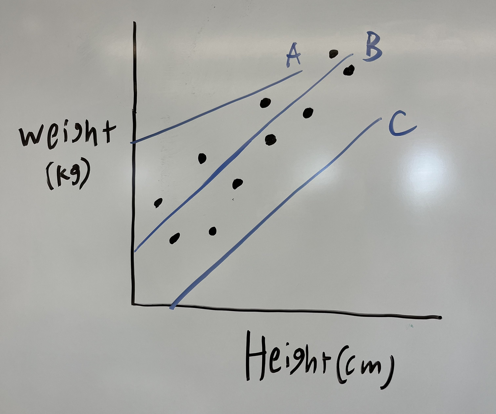
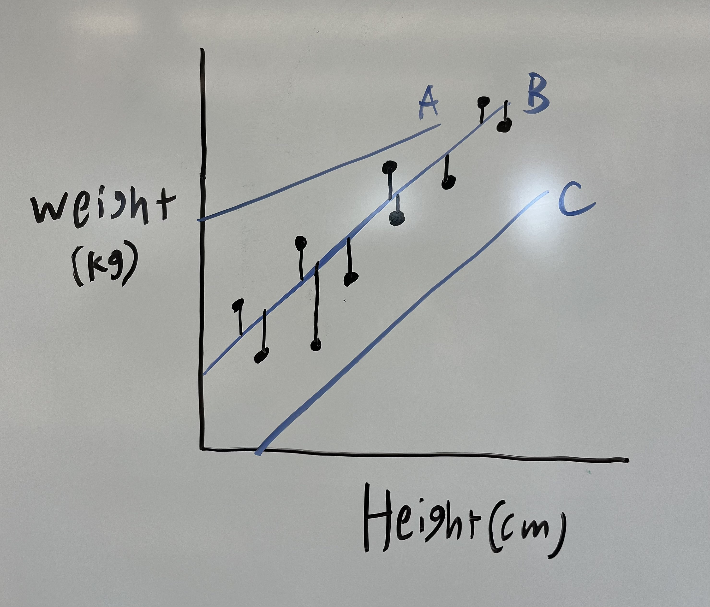
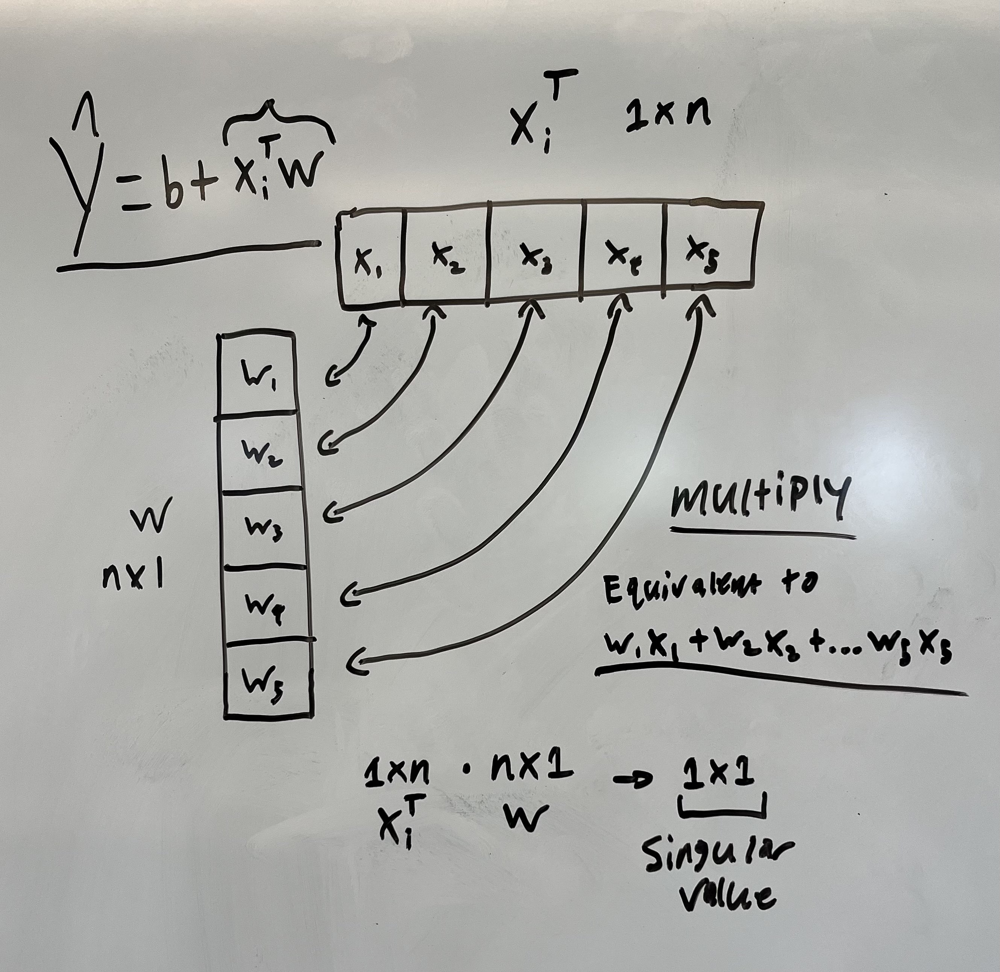
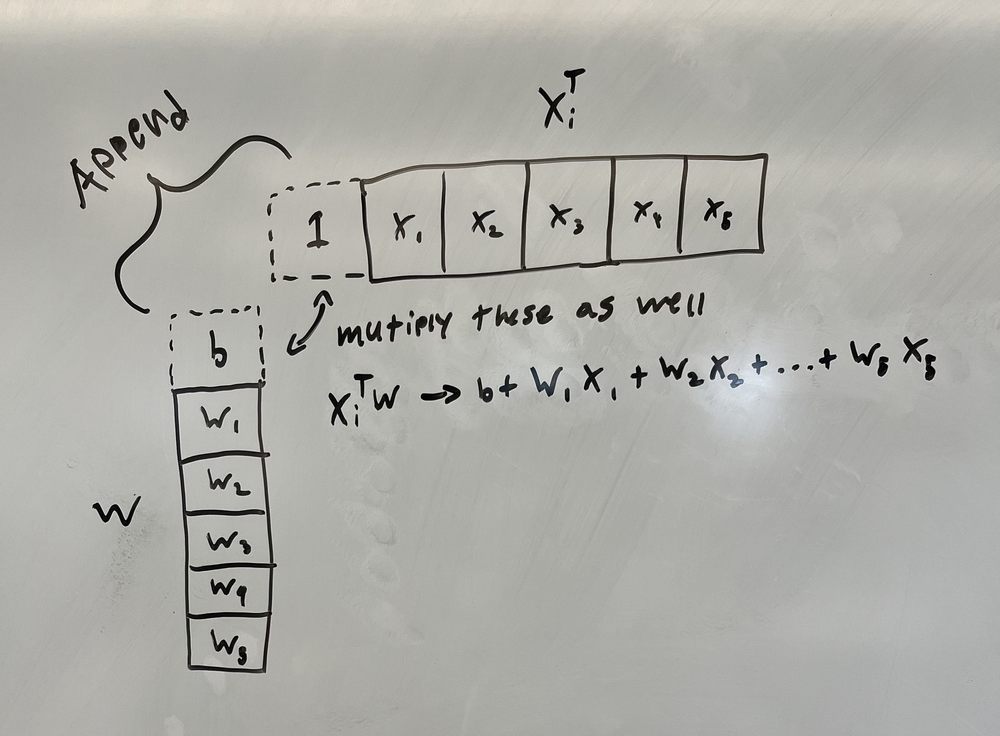
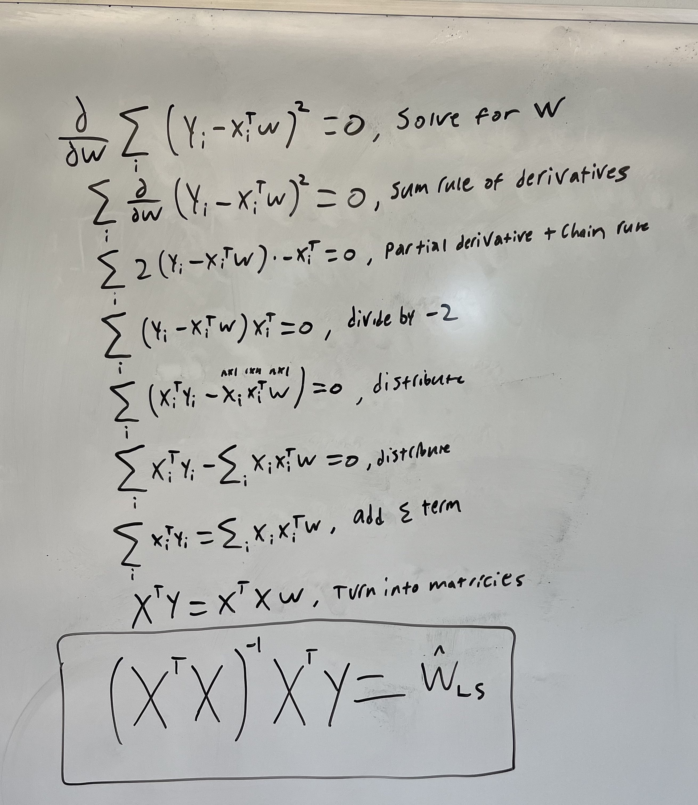
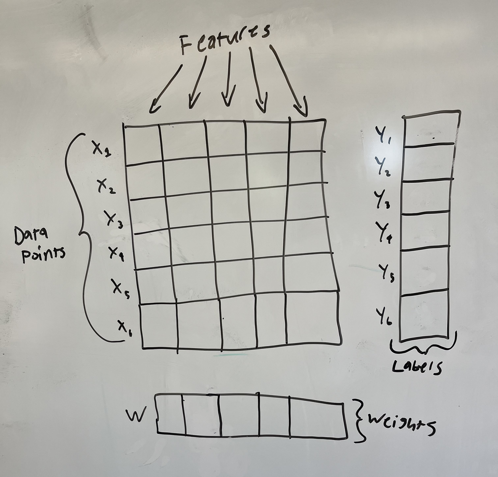
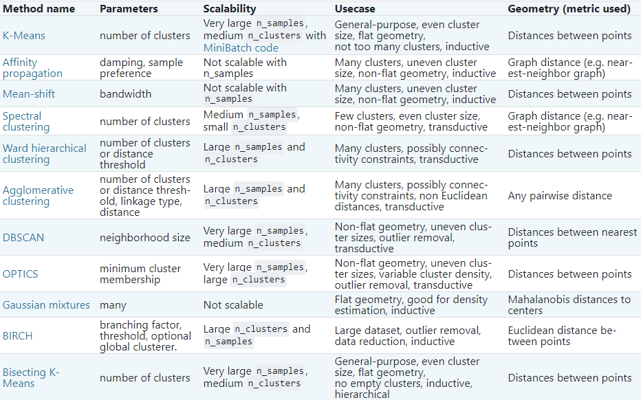
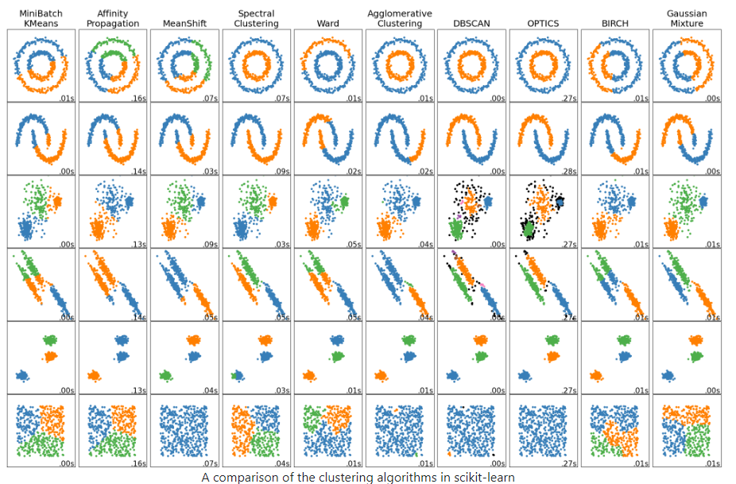

Unit 1: The (machine learning) Basics
Hello and welcome to the Basics section of the I2 megadoc! Our content will be split into two categories: literacy and technical understanding. These topics are fundamental to the entire rest of our course, so please don’t hesitate to reach out to the course staff if you have any questions!
Task 1: Read either the literacy article “Back to Basics” or the technical article linked below to get an intuitive understanding of machine learning. This is required.
Unit 01 Technical Article
Task 2: Go through the text and videos in your respective article and answer the provided synthesis questions. Submit your answers to your intro course TA. Make sure to indicate in your submission or file name which article (technical or literacy) you read and which questions you’re answering. Link to this task
Task 3: Complete either the technical project or the non-technical project. Submit your work to the intro course TA. Link to this task
Back to Basics: Machine Learning
This article is going to cover what machine learning is at a conceptual level.
The general idea behind machine learning is that a machine uses known information to make predictions about unknown information—much like humans. For a long time, we used computer programming to manually give computers instructions on how to do things. But there are a lot of things that we may want computers to do that are far too advanced to manually instruct them on. The goal of machine learning, then, is to get computers to “learn” how to do tasks so that we don’t have to give it explicit instructions.
To better understand this, let’s look at an example.
Imagine we want our computer to identify pictures of cats and pictures of pigs.
Our computer has never seen a pig or a cat before, so we have to give it some information to help it get started. Let’s feed our computer the following images. We’ll label the pictures of cats “cat” and the pictures of pigs “pig,” so the computer knows which is which.


Now the computer has to figure out what makes the cat pictures different from the pig pictures. What does it notice? Well, all the cats are furry and all the pigs are pink. So the computer comes up with the following system:
- if the picture has a furry, non-pink animal, it’s a cat
- if the picture has a non-furry, pink animal, it’s a pig
- otherwise the computer isn’t sure
Okay, let’s see how it does! We give the computer these three pictures and ask it to classify them as “cat” or “pig.”

The computer classifies the first animal, which is furry and not pink, as a cat—perfect! But it classifies the second, which is not furry and pink, as a pig, and the third, which is furry and not pink, as a cat.
Now we have to correct our computer. We let it know that it was right about the first image, but the other two were wrong.
Here’s where the crucial part of machine learning comes in: the computer looks at the images again and learns why it was wrong. It realizes that not all cats are furry and not all pigs are pink. Maybe it also realizes that all the cats we provided have long tails, and all the pigs have long snouts.
Whatever the case, the computer learns how to better classify the animals based on the data we provided. It learns which features are crucial and which features are optional in its decision, and the more data we provide, the more it refines its processes and produces accurate predictions. This occurs over many, many, many trials, until it finally begins to make perfect predictions. This is the very general idea of how machine learning works.
But what does it mean for a computer to “learn”? How does a machine “learn” anything, the way humans learn? For that matter, how can the computer tell that the pictures of cats have fur in them, or that the pictures of pigs contain long snouts?
These are exactly the questions that this course aims to answer. We’ll learn how humans learn, how machines learn, and how our understanding of one allows us to develop our understanding of the other. We’ll also learn how humans interpret images and pictures, and how we can use that information to get computers to do the same thing.
For now, though, check out the rest of the homework and the synthesis questions provided.
Unit 1 Synthesis Questions
Video 1: How AIs, like ChatGPT, Learn (9 min)
This first video describes how exactly a machine “learns”—we’ll talk about this even more in Unit 2!
Synthesis Questions:
- What are the limitations of early “if this, then that” logic?
- Why do we need a teach-build cycle to get our machine to learn?
- Why does this teach-build-teach-build cycle work? How do the “bots” get better over time?
- Why is it so important for companies to use a good dataset to teach their bots?
Article 1: (this is the same article from later in this megadoc!)
The next article is math-heavy, but very useful for understanding how ML works. Reach out to a TA if you have any questions–this can be tough!
Linear Regression
The two main tasks that statistical ML attempts to solve are the classification task and regression task. Classification is the task of bucketing a set of items $S$ into $k$ categories. We will explore classification more in Unit 2. Regression is the task of predicting the value of one variable (usually called the responding variable), given the values of other feature variables. For example, predicting a person’s weight based on their height. The weight is the responding variable/label ($y$) and the height is the feature variable ($x$). You can also have the case with multiple dependent variables. You could be attempting to predict the cost of a house depending on its square footage ($x_1$), location ($x_2$), number of floors ($x_3$) and other things ($x_n$). Each of these $x$ items is called a feature.
Let’s start with the case of one responding variable and one feature. Below is a plot with some data, and lines that could be the “best fit” for the data. Which line is the best fit?

Obviously it is line B. But how do you know that? You will probably say that it is due to how close the dots are to the line (in comparison to the other lines). We can formalize this “goodness of fit” with a Sum of Squared Errors calculation (SSE).
Sum of Squared Errors and Least Squares
To calculate this, simply compare the distance from the ACTUAL y-values/labels ($y_1$, $y_2$,…,$y_n$) to the PREDICTED y values ($\hat{y}_1$, $\hat{y}_2$,…,$\hat{y}_n$), and square the differences to account for negatives (absolute value cannot be used easily due to it not being differentiable everywhere. This becomes important later). The equation is: \(SSE = \sum_{i} (y_i - \hat{y}_i)^2\)

Intuitively, you can see that if $y$ and $\hat{y}$ are closer, the SSE will be smaller. Therefore we want to minimize the SSE. Doing this is called **Least Squares (LS)** regression.
Now we turn attention to $\hat{y}$ (the hat decorator just means that it is predicted, not a ground truth). How is it calculated? We all know the $y = mx + b$ formula for a line. $m$ is the slope and $b$ is the intercept. However, the equation looks different when we have many features (many $x$). \(\hat{y} = b + w_1x_1 + w_2x_2 +...+w_nx_n\) The $x$ subscript here represents different features within 1 datapoint. The $b$ term is the intercept and the $w$ terms are the slopes on different dimensions. You can just think of them as coefficients for each feature.
We can rewrite this long form sum as a dot product.
\[\hat{y}_i = x_i^Tw + b\]NOTE: The $x$ subscript here represents 1 datapoint now instead of 1 feature (remember we have many dots on the graph).
Here is a visual diagram of why this an equivalence. This is where some linear algebra intuition may come in handy.

Dealing with the $b$-term
To make this even easier for us, we can remove the $b$ term from the equation by appending a $b$ and $1$ to $w$ and $x_i^T$ respectively.

Now we have that:
\[\hat{y}_i = x_i^Tw\]With the $b$ term implicitly encoded. Plugging this back into the SSE equation:
\[SSE = \sum_{i} (y_i - x_i^Tw)^2\]$x$ and $y$ are provided by the data. We cannot change them. The $w$ vector, however, has parameters ($w_1$, $w_2$,…,$w_n$) that we can learn to fit the data!
This is Machine Learning!
Make sure you understand the setup so far, because we are going into some calculus now.
Solving for w
We want to find the parameters ($w$, and $b$ implicitly) that minimize the SSE. In other words, what values of $w$, $b$ will make it so that the SSE equation evaluates to the smallest number possible. This notates as $\arg\min$.
\[\hat{w}_{LS}=\underset{w}{\operatorname{\arg\min}}\sum_{i} (y_i - x_i^Tw)^2\]To solve for the left hand side of this equation, you would take the derivative of the equation $\sum_{i} (y_i - x_i^Tw)^2$ with respect to $w$, set it equal to zero, and solve for the $w$ term. Once you write $w$ in terms of $x$ and $y$, it is the solution to the optimization problem we defined above. Just to clarify: the value we are solving for is the vector of weights or coefficients that minimize the SSE in the Least Squares (LS) formulation of linear regression (which is what we are doing).
\[\frac{\partial}{\partial w}\sum_{i} (y_i - x_i^Tw)^2 = 0\]The derivation is difficult (and it is very easy to mess up) so we won’t try and make you learn/memorize it. However, if you are curious, here is a whiteboard example.

We ultimately get that:
\[\hat{w}_{LS} = (X^TX)^{-1}X^Ty\]Where $X$ is a matrix created from stacking all $x_i$ examples on top of one another, and $y$ is a vector of all of the $y_i$ labels stacked. Below is a visual to help you understand:

Awesome! You now have a weight vector that you can multiply by a new set of features to predict the $y$ for that set of features! If you want to, you can easily code this up in numpy with a dummy dataset to prove to yourself that the simple equation I showed you previously works! The best part about this closed form solution is that this is the mathematically best set of weights that solves this problem. A problem where all minima are global minima is called convex.
The main takeaway here is the intuition behind setting up a machine learning problem:
- Create a model with parameters
- Find an objective function to minimize that uses the model
- Derive and solve if a closed form solution exists
In some cases a closed form solution will not exist. There are ways around this, one of them being Gradient Descent (Unit 2). However, this is beyond the scope of this unit and a whole class could be taught on these concepts. If you wish to dive deeper, take the ML class offered by your university!
Synthesis Questions:
- What is a feature in this context?
- What are the significance of the w terms within the modified y = mx + b equation described in the article?
- What is SSE?
- How is it calculated?
- What can it tell you about the values you chose for w?
- If you modify the $w_1$ term and the SSE goes up, was that a good modification?
- How is the bias term implicitly encoded?
- Write out the linear regression formula when you wish to estimate the impact of age, height, and weight of someone on their marital status.
- Hint: How many x terms will there be? How many features?
Unit 1 Project Specs
Non-Technical Project Spec:
The non-technical project for this unit will involve some writing! Choose 3 of the prompts below and write at least 200 (meaningful!) words on each one! We will not be strictly grading you on correctness or anything like that. This is an opportunity to deeply engage with the material you have just learned about, and creatively connect it to neuroscience!
- What might be some applications of principle component analysis (PCA) in neuroscience research? Explain your ideas.
- What might be some advantages and disadvantages of applying machine learning to neuroscience?
- What are the ethical implications of using machine learning in neuroscience research?
- What might be some applications of support vector machines (SVM) in neuroscience? Be creative!
- Reflecting on your learning from this unit, what is one thing you found to be most interesting? Something that
- What is one concept from this unit that you would like to learn more about and why?
Be sure to submit your work through google drive using the submission form! We would prefer that you upload it to your own Drive first, then use the submission form dropbox to connect that file to your submission!
Technical Project Spec:
The project for this “Basics” section will have you finish a code template through Google Colab. Please ask questions as you work through this project. Be sure to discuss with others in your group if you have one! Share your answers as you like, the goal is to learn and we’re not holding grades over your head.
This project will be going over k-means clustering (unsupervised ML). We will be using the Scikit-Learn library.
A few general helpful tips (if applicable):
- Be sure to appropriately make a copy of the Colab template before starting to save your progress!
- Renaming your copy to something that contains your name is a good idea, it will make it easier for us to review your submissions.
- Leave comments to cement your understanding. Link syntax to ideas.
Check out this handy image that gives popular sk-learn clustering algorithms and their usages:

Also this image visualizing the clustering algorithms:

Read up on k-means clustering in the provided link (Images provided above also contained here). Feel free to check out the other algorithms as well: SK-Learn Clustering
Now, follow the instructions on this Jupyter notebook (hosted on Google Colab) to implement some of the things we talked about! The notebook contains a link to the answers for this project. To use it, you will need to import the ‘.ipynb’ file to a new Colab project yourself. It is highly recommended that you only use this to check your answers after you are done completing the project yourself. This is a trust-based system!
Colab Link: Unit 1 Colab Template (30 min)
When you are finished with your code, independently verify that it works and have fun with it! You could try this method on different datasets, such as this one for example. If you add any additional functionality be sure to talk about it with others and give them ideas.
Remember that this is all for your learning, so do your best and don’t stress!
Congratulations! You now understand the basics of Clustering and PCA!